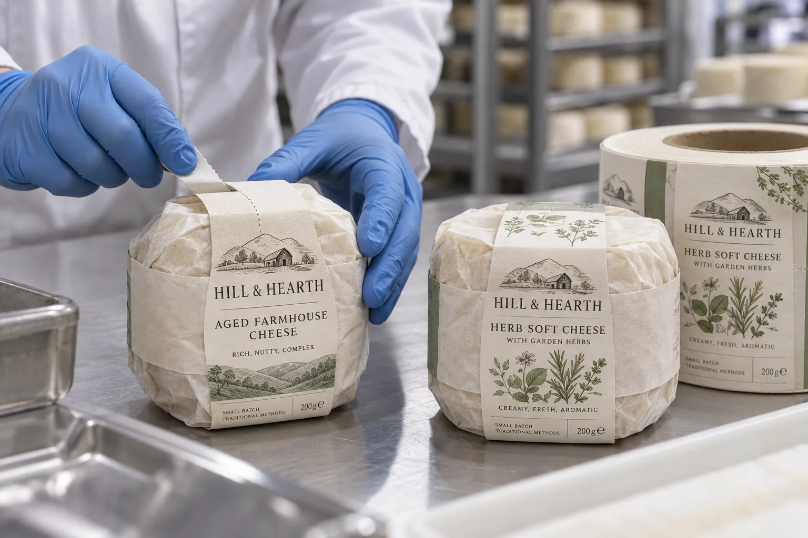

The band fits the wrapper, not the bare wheel
A cheese maker may tell me the wheel diameter and ask for a band length. I would measure the cheese after it is wrapped. Paper folds, seams and the height of the finished pack change where the band lands. A strip that looks generous on an unwrapped wheel can be too short when the wrapper bunches at the top.
HERMA describes cheese labels that combine product information with a closure function, including bands on wrapped formats. That is useful evidence for the format, but not a blanket approval for our stock, a particular cheese surface or direct food contact.
Two ways a cheese buyer may use the band
Imagine a composite farm shop with one aged cheese and a paper-wrapped round. It could place a broad illustrated band over the outer paper to give shoppers a readable name while helping hold the folds. I would keep the intended tear point obvious so the customer does not need to shred the whole wrapper to open it.
A composite dairy packer runs several herb variants through the same wrapping station. It may use preprinted bands with a variable batch field. Here I care as much about the changeover sheet as the art: the printed product name, herb picture and overprinted code must refer to the same wheel.
Define the adhesive and tear zones
Map where the band touches only wrapper, where its ends overlap, and where a consumer pulls it apart. If a non-adhesive pull tab or perforation is wanted, specify it on the physical sample. Do not borrow a direct-food-contact claim from another label construction. The supplier needs the exact outer wrap, expected storage moisture and the intended contact map.
| Sample check | Question |
|---|---|
| Wrapped size | Does the band fit small and large wheels? |
| Closure | Do the ends hold after packing and handling? |
| Opening | Can the shopper find and use the tear point? |
| Is the cheese name visible on a shelf? | |
| Code | Does the variable field remain flat and legible? |
Our buying view
Choose a band because it removes a step
If the printed band can identify the cheese and hold the outer paper in the same operation, it earns its complexity. If staff still need a second strip to keep the fold closed, I would revisit the shape before ordering a prettier print finish.
Send these samples
- Finished wrapped wheels at each intended size.
- Outer wrapper material and fold pattern.
- Opening path and any pull-tab requirement.
- Product and variable-data artwork matrix.
- Storage, handling and any direct-contact question.
For related opening features, see food-package seal labels. For a different paper package surface, compare labels on bakery bags.
Frequently asked questions
Can a band label hold a cheese wrapper closed?
It can be designed to help secure an outer wrapper, but the actual material, adhesive area and opening behavior need a finished-pack trial.
Can the label touch the cheese?
Do not assume direct food contact is permitted. State whether the label touches only the outer wrapper and obtain the required material review for any other contact.
Do all wheel sizes use one band length?
Only if wrapped circumference and overlap remain within an approved range. Measure filled, wrapped wheels from each size.
Related buyer guides
Review your label specification
Send package photos, label dimensions, material details, quantity and application conditions. Include good and failed samples where possible so the discussion starts with evidence.